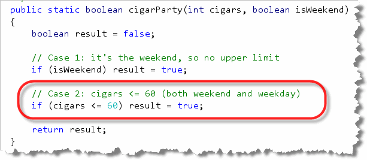
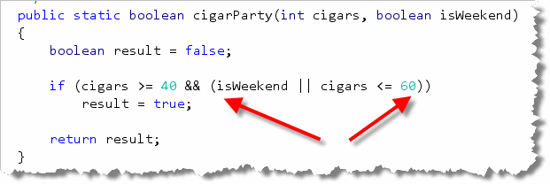

This week, the focus is on logic. Now, it's
your turn to get some practice writing your own logical functions.
Place your function inside
CigarParty.java which you'll find in this week's starter
folder.
Time for a Cigar Party
In the first section this week
you you learned how to write functions that used
if statements. But, what if your function needs
to test several conditions? Well, you can use
Java's logical operators to combine several Boolean
conditions into a single test and use that as
your if condition.
 Nick Parlente, the Stanford Computer Science professor who
hosts the Nifty Assignments panel at the annual
SIGCSE conference, is something of an expert on squirrels,
like those that hang around the OCC Computing Center.
Nick Parlente, the Stanford Computer Science professor who
hosts the Nifty Assignments panel at the annual
SIGCSE conference, is something of an expert on squirrels,
like those that hang around the OCC Computing Center.
According to Nick, "when squirrels get together for a party, they like to have cigars," much like Tom and Jerry from this old cartoon created when I was a kid.
Now, according to Nick, "a squirrel party is successful when the number of cigars is between 40 and 60, inclusive. Unless it is the weekend, in which case there is no upper bound on the number of cigars."
Let's use Java to write a function named cigarParty()
using the if statement to give our furry friends
some decision-making help. Here's the documentation for the
function:
 Just like the string functions you worked on earlier, this problem:
Just like the string functions you worked on earlier, this problem:
- Tells you the name of the function you need
to write; in this case,
cigarParty. - Tells you the name and type of each parameter.
In this case, the first parameter, named
cigarsis a number. (This doesn't tell you what kind of number, but the examples section later on can provide some additional hints.) The second parameter,isWeekendistrueorfalseso you know that it has to be aboolean - Tells you what kind of value the function is going
to return. Since this function returns
trueorfalse, we know it's abooleanfunction.
Before Everything: Write a Skeleton
At this point, without knowing anything else, you can write
a syntactically correct function, that compiles and can be
tested. Add your code at the section marked 6 in the previous
picture:
 Notice how we can write the header by knowing the return type,
name and parameters. We write the "skeleton" body by:
Notice how we can write the header by knowing the return type,
name and parameters. We write the "skeleton" body by:
- Creating a
resultvariable of the same type as the function return type and initializing it to some value. (Usuallyfalse,0or the emptyString, depending on the function type.) - Returning the
resultat the end of the function.
Once this is done, you can run the Check program to test the function. You'll see it passes some of the tests, (since there are only two possible return types with a Boolean function), but fails others. To complete the problem, you'll need to go back to the problem description and use some logic to actually solve the problem.
Attempt 1: One Condition at a Time
Before we look at using the logical operators, let's see if we can solve the problem the "old-fashioned way". To do that, you just need to break it into several discreet steps, and think of one part of the problem at once. Let's just consider the upper bounds.
Since our result starts
out as false, let's start by handling the
parameter isWeekend. If it's the weekend,
we know that there is no upper limit on the number of
cigars. Let's not worry about the lower limit just yet
and say that, if it's the weekend, the party is a
success.
Here's the code we can use to implement that assumption:
 When we submit the problem, you'll see that more than half of the
tests now pass:
When we submit the problem, you'll see that more than half of the
tests now pass:

Attempt 2: Refine the Results
Now we've handled the case where it's the weekend. Let's handle the
upper bounds when it's not a weekend. We know in that case,
our party will be successful if there are no more than 60 cigars.
Here's how we'd implement Step 2:

When we submit the problem, you'll see that we now pass about 64% of the tests. More importantly, the only tests we fail are those where the number of cigars is less than 40:
Attempt 3: Handling the Failure
Our two previous if statements took care of all of
the upper bounds conditions. We are correctly returning
false any time the squirrels are given more than
40 cigars on a weekday. Adding one last condition to re-set
the result back to false in those cases where there
are too few cigars, leaves us with this:
 Since that handles all the remaining problems, testing now shows no
errors:
Since that handles all the remaining problems, testing now shows no
errors:

Attempt 4: The Logical Operators
Although you can solve most logic problems using "brute force" like this, most of them will be much easier (not to mention shorter), once you pull the logical operators out of your toolbox.
Notice that, in this case a party is successful if the
number of cigars is at least 40 and no more than 60
on the weekdays. We can combine that into a single
condition, like this:

Notice the parentheses surrounding the last two relational expressions. Remember that&& has higher
precedence than ||. The parentheses make sure
that the last two conditions are checked first, and the result
(either it is the weekend or the maximum number of cigars is
not more than 60) is combined with the first condition (the
number of cigars is at least 40). If both of those
are true, then the party is a success.
If you remove the parentheses, though, you are saying that
if the cigars are at least forty and it is the weekend,
or, if the cigars are not more than 60, the party is a success.
Of course that means that the party will be successful with
no cigars anytime, and a weekend party with a hundred cigars
would be a failure:
 Who knew parentheses could be such a big deal?
Who knew parentheses could be such a big deal?
A Final Simplification
You'll notice that the solution for the Cigar Party first
creates a result variable, sets it to false
and then returns it. That's a good habit to get into when you
are first developing a function; working step-by-step to develop
a skeleton helps you to avoid skipping a step.
After you finish, though, you may want to simplify things a
little, by just using the Boolean test expressions as the
return value for your function. After all, if the condition
is true you return true, and, if the
condition is false you return false.
That means you can rewrite cigarParty() like
this:
 This is a very common form for Boolean or predicate functions.
This is a very common form for Boolean or predicate functions.
Once you have created the program, compile it and then Check your results. Keep trying until you get a perfect score.